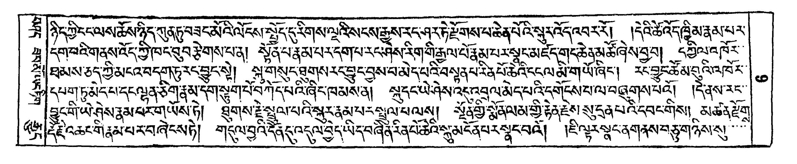
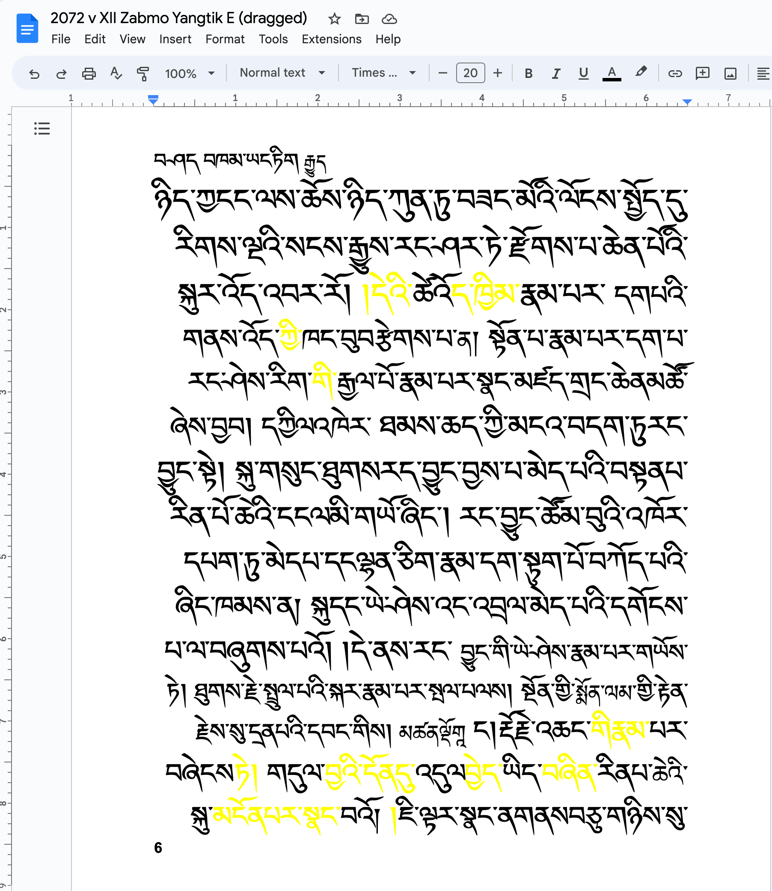

Optical character recognition (OCR)#
Note: Research in application of AI on optical character recognition and related artificial intelligence topics is a very fast moving field. If you have new information that should be part of this collection, please generate an issue at github.
Overview#
Test-date |
OCR Tool |
Comment |
Evaluation |
|---|---|---|---|
2023-03 |
Google Drive, Google Docs |
Requires upload of PDFs to a Google account |
4/5 |
2023-03 |
Tesseract 5.3 |
Local installation required |
2/5 |
Google drive and Google docs (online OCR)#
Excellent progress has been made by Google in automatically converting woodblock pechas into editable text. This is currently the recommended way to OCR Tibetan text corpora.
The workflow for conversion is:
Get a Tibetan pecha or text in PDF format.
Upload the PDF file to Google drive (free Google account required)
Open the PDF with Google Docs: the PDF will be automatically translated to text, and color marking is used to highlight difficult parts.
Example#
A one-page PDF (you can also use of course multiple pages) is uploaded to Google Drive

Then, in Google Drive, open the PDF. You will see a button “Open in Google Docs”. Do so, you will get editable text:

Note that even the side-text and page-numbers have been automatically identified! Still, a number of unrecognized spelling mistakes require attention.
Local conversion with Tesseract#
Installation#
Install tesseract with you package manager. Some Linux variants require to additionally install language packs, e.g. tesseract-data-bod for Tibetan.
On a Mac, assuming homebrew is installed, simply execute:
brew install tesseract
Additionally it might be useful to install imagemagick to be able to convert PDFs to images:
brew install imagemagick
This gives the convert command that allows converting many image- and PDF-formats.
Usage example#
tesseract only understands image formats (no PDF). If you have a PDF, first convert in to an image:
convert myPdf.pdf myImage.png
This uses imagemagick’s convert command to convert myPdf.pdf into myImage.png.
Then use:
tesseract myImage.png - --psm 6 -l bod
For our example text from above, the result (with tesseract 5.3) is:
ཛཱ ཉིདཀྱི་ངངལས་ཆོས་ཉེད་ཀུནཏུབཟང་མོའི་ལོངས་པཱོད་དུརིགས་ལྔའིསངསརྒྱུས་རང་ཤར་ཏེ་རྫོགས་པ་ཆེནཔའི་གྲྭརའོད་འབར་རོ། །དེའི་ཚོའོདཁྦིམ་རྣམ་པར་
ད་ིས་མསོསཏདཞུན།བསང་ད་ི་ ཾ ་ི་གིཾཾས་ རཱ
ཐམས་ཅདྲ་ཤིམངའབདགུཏུ་རངྱབུང་སེ། གུ་གསུང་བུགསརདྱ་བུངབས་བམེདཔའིབསནཔ་རིནཔོ་ཆའི་དངལ་ཡི་གཡོ་ཞིང། རྭངབུངཚོམབུའི་འཁོར་
དཔགཏུམེདཔ་དཔྱལནཅི་གྲནམ་དགྱར་གཔེབཀདཔའི་ཞིང་ཁམསནེ། ལཱདཔ་ཡེཤེས་འབལ་མེདཔ་འི་དགོངསཔ་ལ་བྱའགསཔའོ། །དྲཤས་རང་
ངང་གི་ཡྲཾ་ཤེས་ནམ་པར་གཡོས་ཏེ། ཐུགས་རྗེ་ཕྱུལ་པའི་སླར་ནམ་པར་པྦུལ་པཝསུ། ཧཱཾཧགྱི་སྨོནལམ་གླི་རྟེནཇེས་སུ་དྲན་པའི་དབང་གིས།, མཚན་རྫོགྲ
དངིས།པར་བཞེངསཏ། གྲ་འི་ི་དིདཡདབནིནནཔ་ཚའི་ླུམོོ་ལབའོ། ཇི་ཧརཝངནགནས་བྷཅ་གཉིསདྱ།
which is inferior to the above Google Docs solution.
Things to try:
-lselects the language, there are two main variants:-l bodand-l script/Tibetan.--psm <number>select the segmentation mode:
PSM mode |
Explanation |
|---|---|
0 |
Orientation and script detection (OSD) only. |
1 |
Automatic page segmentation with OSD. |
2 |
Automatic page segmentation, but no OSD, or OCR. |
3 |
Fully automatic page segmentation, but no OSD. (Default) |
4 |
Assume a single column of text of variable sizes. |
5 |
Assume a single uniform block of vertically aligned text. |
6 |
Assume a single uniform block of text. |
7 |
Treat the image as a single text line. |
8 |
Treat the image as a single word. |
9 |
Treat the image as a single word in a circle. |
10 |
Treat the image as a single character. |
11 |
Sparse text. Find as much text as possible in no particular order. |
12 |
Sparse text with OSD. |
13 |
Raw line. Treat the image as a single text line, bypassing hacks that are Tesseract-specific. |
For more information, see Tesseract options.